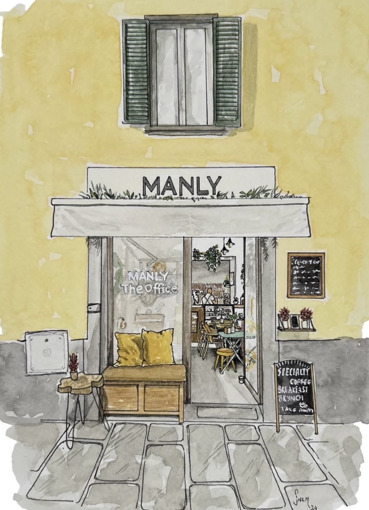
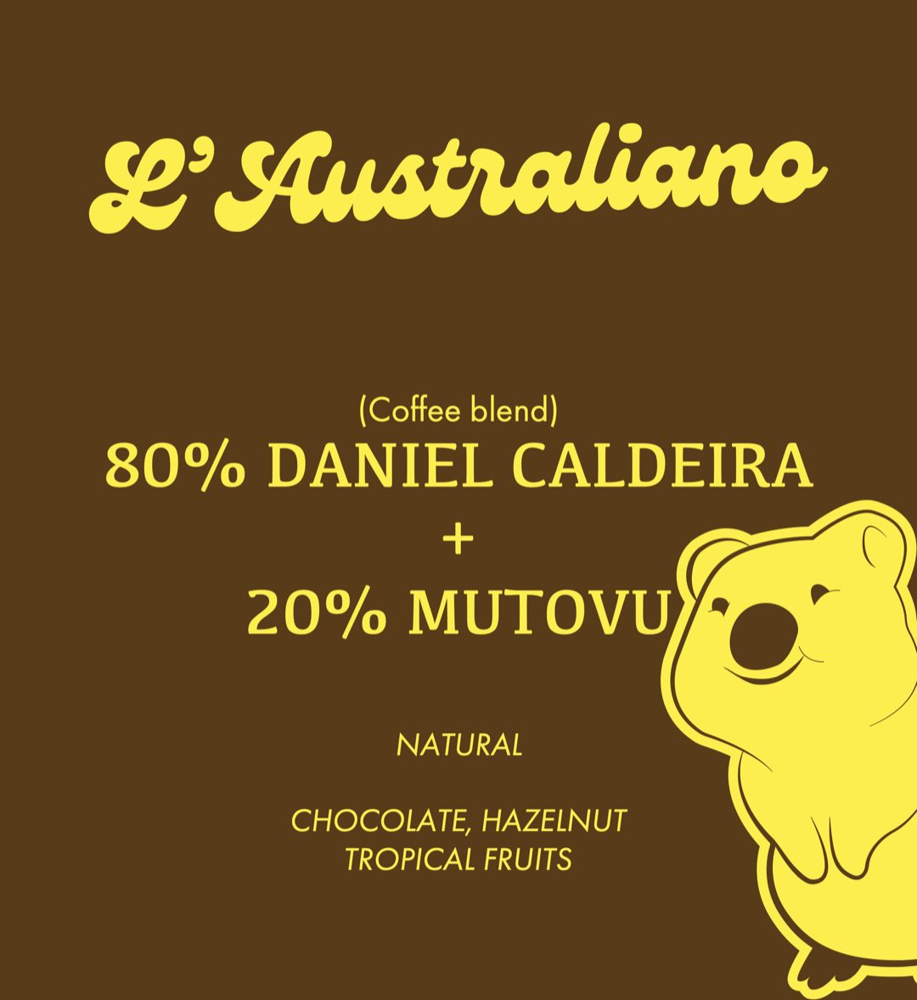
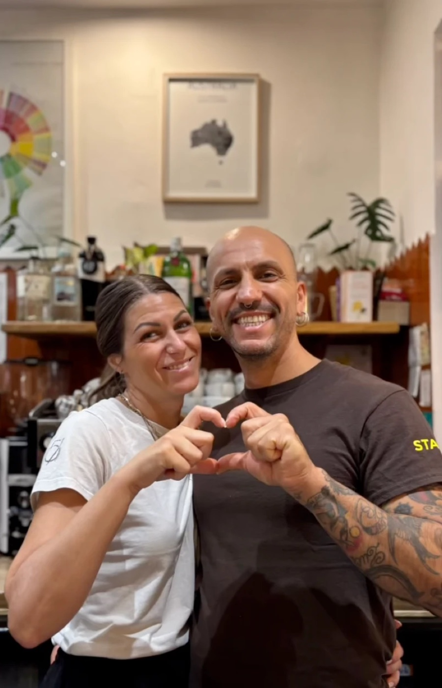
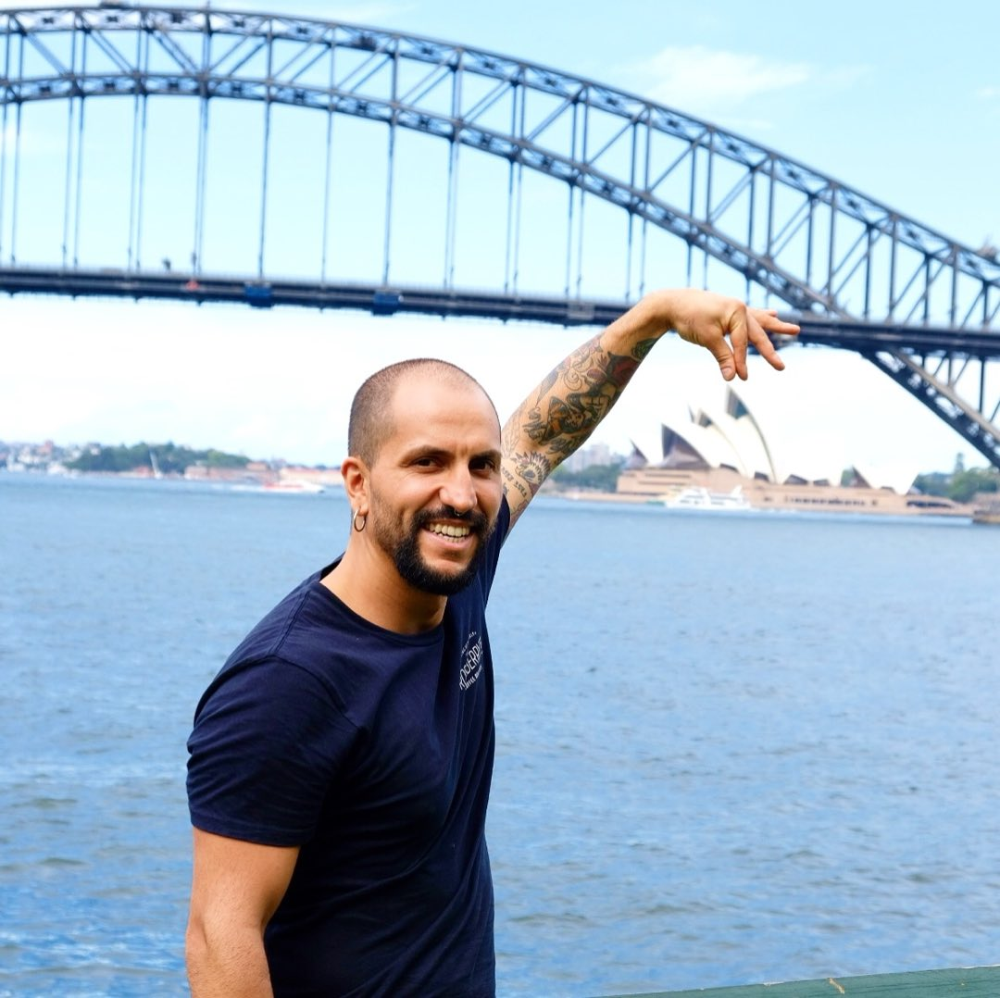
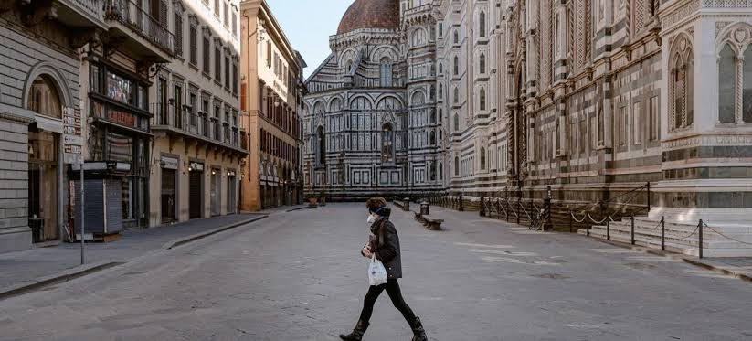
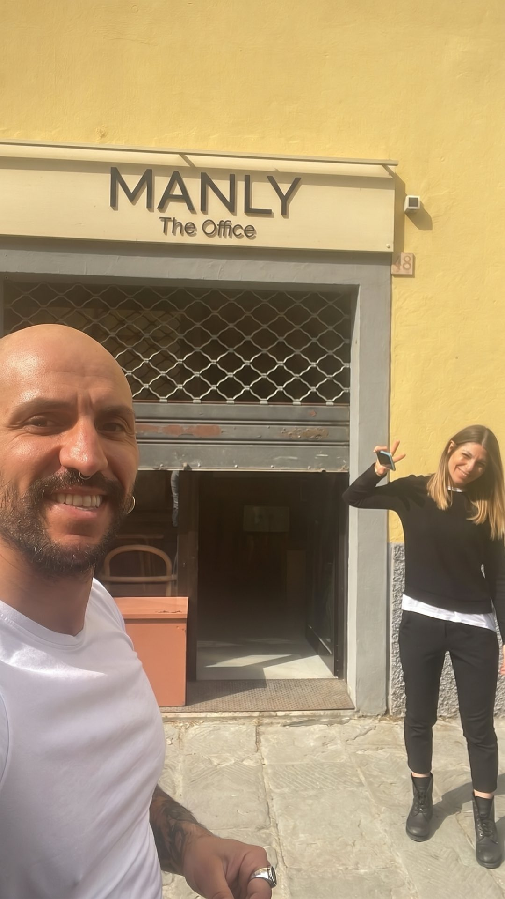

Caffetteria
Espresso, flat white, long black, batch brew e cold brew di stagione. Latte d’avena disponibile.

Specialty coffee & brunch · Dal 2023
Specialty coffee in stile australiano e brunch, appena fuori Porta San Frediano.
4,9 su Google · oltre 670 recensioniSpecialty coffee, ospitalità australiana. A due passi da Porta San Frediano, dal 2023.
Recensioni
Alcune delle recensioni dei nostri clienti su Google.
Bellissimo posto nel cuore di Firenze, piccolo e accogliente. Un posto dove fare un buonissimo brunch o prendere un delizioso caffè, penso il caffè più buono che abbia mai assaggiato in vita mia! Maykol, il proprietario, è stato molto gentile e accogliente. Ci ha spiegato come sceglie e prepara il caffè trasmettendoci tutta la sua passione e competenza. Torneremo presto :)
Uno di quei posti dove il brunch diventa un piccolo rituale da godersi senza fretta. Piatti curati, ingredienti di qualità e un’atmosfera contemporanea che ti fa sentire subito nel posto giusto. Manly è una piccola chicca a Firenze, perfetta per concedersi qualcosa di speciale. 🥑☕️
Grande Maykol! Un posto davvero davvero molto suggestivo. Lui e il suo staff ti fanno sentire a casa, mettendoti a tuo agio fin da subito. Tra una piacevole chiacchierata e l’altra, con lo staff, abbiamo bevuto e mangiato davvero tanto bene. Tutto particolare e di ottima qualità. Vi consiglio di farvi macchiare il caffè direttamente da Maykol, come macchia lui, nessuno 😄 Bravi ragazzi!

Shop · Il nostro caffè
Miscela della casa · Tostata da D612 Coffee Roasters, Firenze
La miscela che D612, torrefazione fiorentina, tosta in esclusiva per noi. La stessa che usiamo al banco, da preparare a casa.
Al banco · D612 Coffee Roasters
Tre caffè, tutti tostati a Firenze da D612. La miscela della casa resta sempre; singola origine e filtro cambiano spesso.
Al banco
Una carta corta e curata: specialty coffee, brunch fino alle 14:00 e dolci in vetrina.


Espresso, flat white, long black, batch brew e cold brew di stagione. Latte d’avena disponibile.
Bagel, avocado toast, pancake e banana bread. Opzioni senza glutine e vegane.
Orari e indirizzo
Cucina e brunch8:30–14:00
Via Pisana 48R 50123 Firenze A 2 minuti a piedi da Porta San FredianoPrenotiamo per telefono o con un messaggio su Instagram.
A piedi dal centro
Siamo appena fuori Porta San Frediano, sulla riva sinistra dell’Arno: dal centro si arriva a piedi in una ventina di minuti, passando per il Ponte Vecchio o lungo i lungarni.
Tempi indicativi, a passo tranquillo. Tocca una tappa per il percorso.

La nostra storia
Manly è un quartiere sul mare a nord di Sydney. The Office è il posto, su quella spiaggia, dove si guarda il tramonto. Da lì viene il nostro nome.
Maykol nasce a Firenze e comincia a lavorare come barman, muovendo i primi passi al Mercato Centrale. Poi arriva il caffè, e diventa una passione.
Si forma con Simone Guidi, formatore e fondatore della torrefazione La Sosta, e impara la latte art: disegnare versando il latte nella tazza.

Nel 2016 parte per l’Australia con la sua compagna. Non parla inglese, ma è sicuro delle sue capacità da barista. Pensa che basti.
Non basta: in Australia si lavora e si fa il caffè in un modo completamente diverso. Riparte dalle basi e per quattro anni lavora nelle caffetterie australiane, dove la cultura del caffè è molto più avanti.

Torna a casa con un’idea chiara: aprire un posto suo. Poi arriva il Covid, e il sogno deve aspettare.

Maykol e la sua fidanzata Alice, che lavora anche in cucina, aprono MANLY The Office in Via Pisana.
Lo spazio è piccolo, e si fa il massimo con quello che c’è.
«Come stai?»
È la prima cosa che ti chiede Maykol, appena varchi la soglia.
L’Australiano per l’espresso, singola origine e filtro che cambiano spesso: tutti tostati da D612. Il caffè resta la vera passione di Maykol, e il centro di tutto.
Scegliere prodotti di qualità è fondamentale. Ma la parte più difficile, e più importante, è far sentire le persone accolte e condividere con loro quello che facciamo.
Pancake, banana bread fatto in casa senza glutine, bagel e avocado toast. Proviamo ad accontentare ogni esigenza alimentare, nei limiti del possibile.
@manly_the_office_florence
Nuovi caffè, piatti del giorno e la vita al banco.
Contatti
Per informazioni, eventi e collaborazioni o per ordinare L’Australiano. Ti rispondiamo appena possibile.